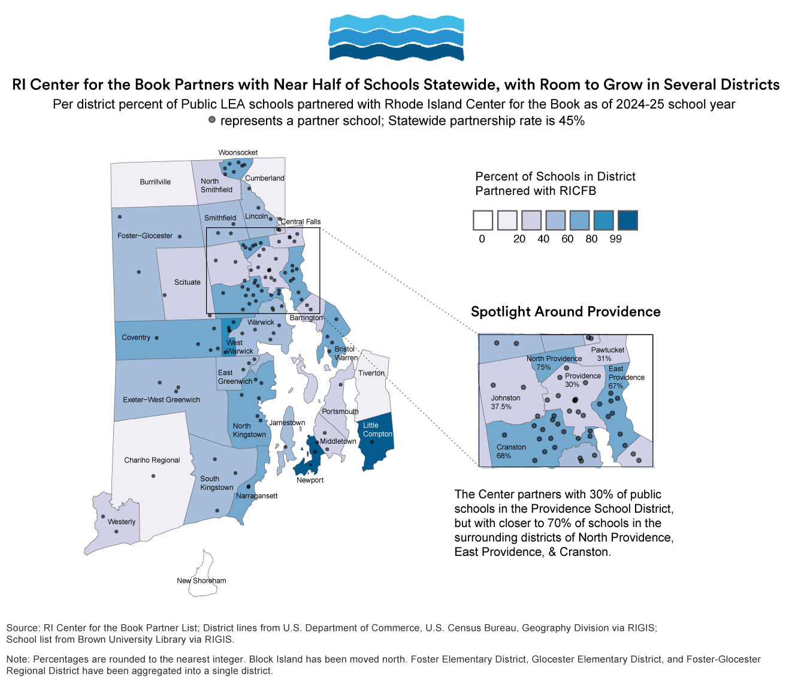
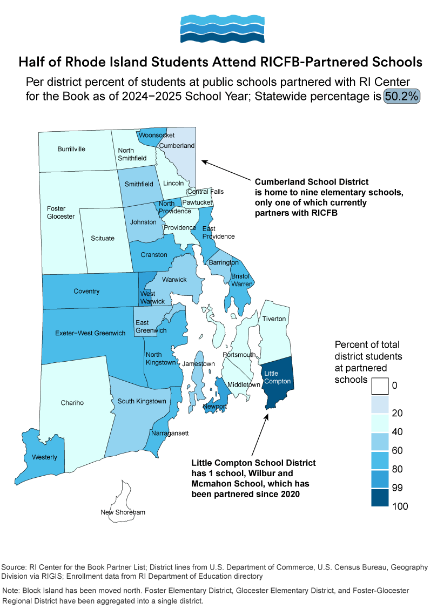
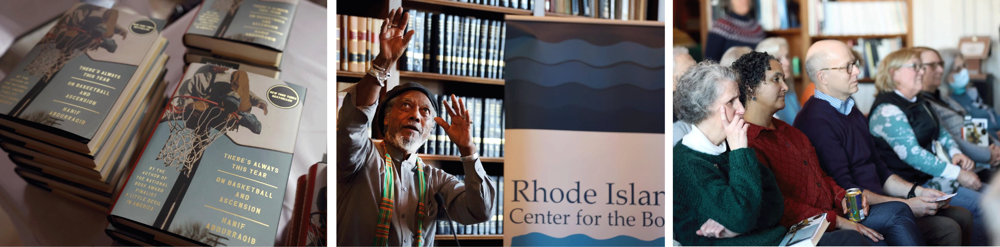
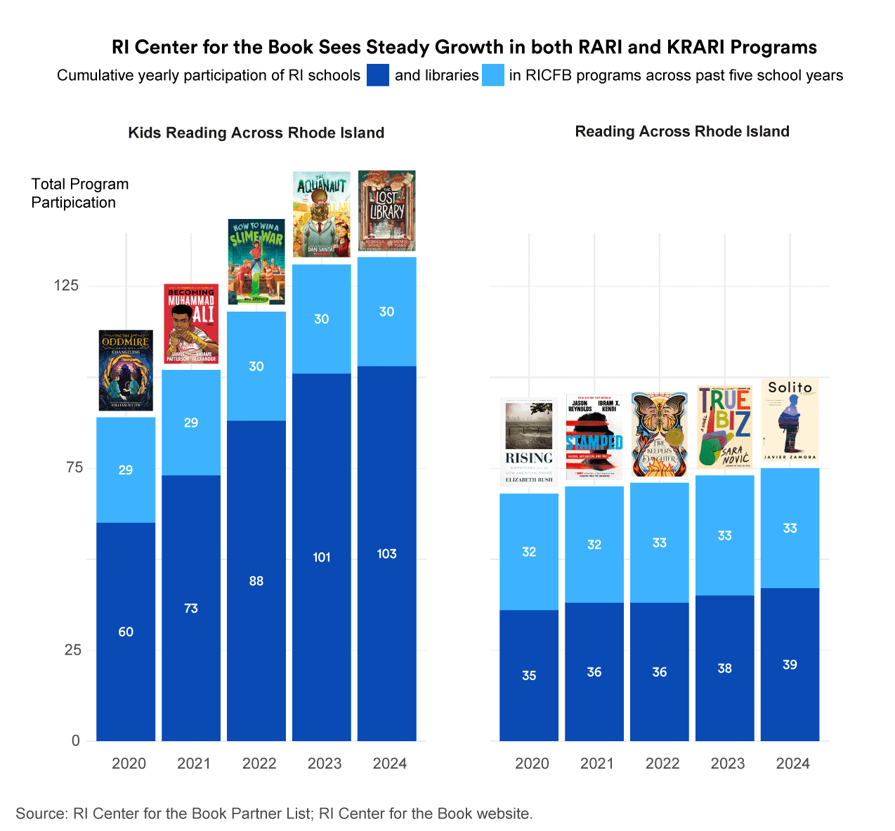

Charting Rhode Island Center for the Book's Growth Since 2020
This year, it's a basketball memoir by a National Book Award Finalist on what it means to make it. Last year, it was a poet's story of migrating from El Salvador to the United States at age nine. The year before that, a novel set at a residential school for deaf students. Each year, as part of their signature Reading Across Rhode Island Program, the RI Center for the Book carefully selects one book which thousands of students, teachers, librarians, and Rhode Islanders everywhere in between will eventually read.
Originally founded in 2003, the RI Center for the Book is the state's branch of the National Center for the Book, housed under the Library of Congress. The Center has a history of partnership with Ocean State institutions. From 2011 to 2018, the Rhode Island Council for the Humanities hosted and funded the RICFB, until the Center became an independent, 501(c)3 nonprofit organization. The following year, the Center moved to operate under the Pell Center for International Relations and Public Policy at Salve Regina University, while remaining an independent nonprofit. Since then, the Center has expanded across the state, primarily through its two flagship programs, Reading Across Rhode Island and its little sibling, which has the same goals for a younger audience, Kids Reading Across Rhode Island. The number of schools and libraries who participate across both programs has steadily increased since 2020, with nearly 200 total institutions involved in either KRARI or RARI last year, as the chart at the top of the page illustrates.
As of the 2024-2025 school year, nearly half of all public schools in Rhode Island are involved with KRARI or RARI. The Center also partners with many independent schools across the state.
The Center's institutional home at Salve Regina in Newport is apparent through its geographical reach, as the two school districts in Rhode Island with the highest percentage of total schools and total students that partner with the Center are Newport and its neighboring district across the bay, Little Compton.
Several of the districts farthest away from the beach towns, such as Burrillville and Cumberland, have high schools which have participated in, Reading Across Rhode Island, but several elementary schools which have not yet had the opportunity to join in the statewide program. The Center also has plenty of opportunity to reach more partners within the city of Providence school district.
The Center's mission is to expand literacy and appreciation for reading across the state, particularly through providing books and learning opportunities for schools, libraries, and other organizations throughout RI, as their website states. Current director Kate Lentz, since taking over in 2018, coinciding with the Center's incorporation as a nonprofit, has also added new programs which act on the same mission from different approaches. The RI Youth Poetry Ambassador program, for example, selects several high school students each year who have demonstrated not only achievement in poetry writing, but also passion for connecting with other community members through poetry. While several of the recent Youth Poet Laureates have come from Providence high schools, those high schools have also been independent schools with more resources, like the Wheeler School or Moses Brown, rather than the city's public schools.
Still, over half of all Rhode Island public school students attend schools which participate in either KRARI or RARI, meaning they may have the opportunity to access free copies of the statewide book selections and join in classroom discussions organized using materials also provided by the Center.

The Center's Reading Across Rhode Island and Kids Reading Across Rhode Island programs, while diverging in book selections, share the mission to build a network of readers across the state with a shared base of literary knowledge. For KRARI in particular, the Center also hopes to help prevent summer learning losses among its large population of partnered elementary and middle schools. Yearly kickoff events for both programs bring together teachers, writers, scholars, and others from across the state to celebrate the book's selection. Photos below from the Center's Instagram account show the 2025 kickoff.
The number of elementary schools who offer the Kids Reading Across Rhode Island program to their students over summer break has been growing particularly quickly since 2018, with over 40 new schools joining since then. New RARI participants have increased more slowly, probably because of the smaller overall number of high schools across the state. Still, the upward trend is apparent, as more schools and libraries in all parts of Rhode Island take advantage of the resources and statewide community which the Center's programs offer.
For the upcoming summer break, thousands of Rhode Island elementary schoolers will have the chance to read three books written and illustrated by Oge Mora, a Rhode Island local author. As they pick up their copies and open the first pages of a Caldecott-honored story, students will be joining in the RI Center for the Book's wave of impact on literacy, open discourse, and joy for reading across the state, which continues to shore up new readers each year.